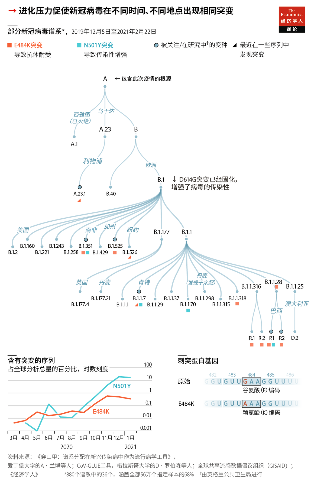
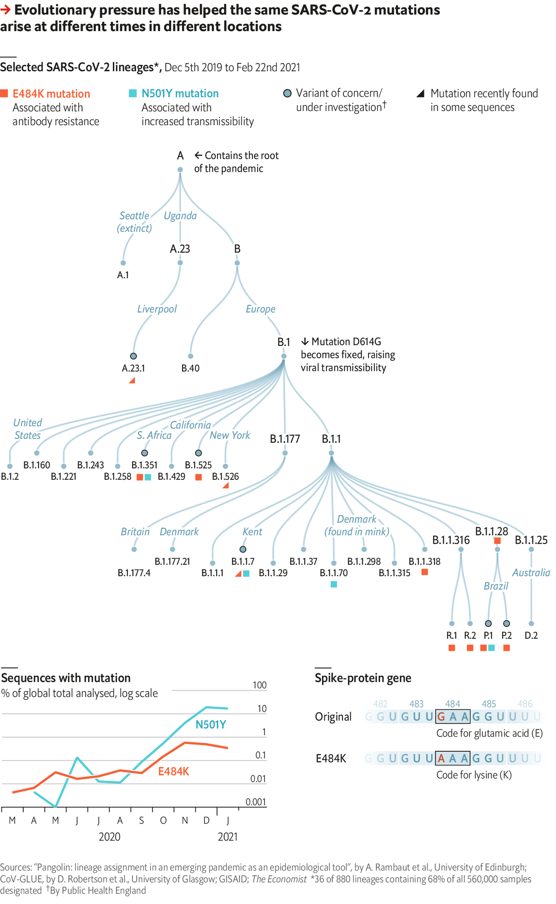

2021-03-16T11:30:27+00:00
新冠病毒变异
家族事务
趋同进化可能使旅行限制变得多余
推动进化过程的基因突变也许是随机产生的。但即使在不同的生存环境下，自然选择往往也会造就出近似的生物。例如，鸟类、蝙蝠、翼手龙和昆虫都各自进化出了翅膀，因为翅膀是绝佳的移动方式。这个过程称为趋同进化。
病毒也会进化。引发新冠肺炎的新冠病毒在感染宿主时会自我复制。过程中病毒的遗传信息——由三万个RNA字母组成的序列——有时会发生损坏。这些突变会在几个方面让新冠病毒变得更加危险。它们会增强传染性、难以被检测到、逃逸免疫应答（包括疫苗的）、导致更多重症。
因此，跟踪新冠病毒的进化至关重要。在全球发现的1.1亿例新冠肺炎病例中，科学家对60万例进行了基因组测序并发表了结果。进化生物学家比较了这些序列和其他病毒特征，编制出了病毒进化树——各种序列之间的一组假设关系，显示了病毒如何不断进化。
所有进化树都始于2020年1月测序的来自武汉的一个初始样本，随后的测序样本均为其后代。根据爱丁堡大学和牛津大学研究人员开发的标准和命名法，具有相似新特征的序列被分成“谱系”。迄今为止已经记录了41,000个基因突变，分为880个谱系。
其中只有少数突变让病毒变得更危险。它们大多发生在构成病毒刺突蛋白（帮助病毒与宿主结合）的3800个字母当中。有时，多个突变会组合起来构成几种新的威胁，一个美国加州的谱系似乎就是如此，它令科学家感到忧虑。新的研究表明，该谱系可能传染性更强，能够逃避抗体，并导致更多重症。在加州完成的测序显示，州内大部分病例或许都是感染了这种变种所致。
其他许多令人担忧的谱系中均存在两种常见突变。正如鸟类和蝙蝠的翅膀一样，这些似曾相识的危险变种在不同地方各自独立进化而成。第一种突变称为N501Y，增加了病毒传染性。自去年12月起在英国泛滥的“肯特”（Kent）谱系中就存在这种突变，其他地方的一些谱系也有。第二种突变称为E484K，它能使病毒部分地逃逸宿主的抗体攻击。E484K在巴西和南非广为存在，在美国和欧洲（包括英国）最近的新谱系中也发现了它。
这种趋同进化最终可能会让对南美和非洲的旅行禁令变得多此一举。不过，即便有边境管制，E484K仍在多地突然出现，这或许也带来了一线希望。相比出现众多不同的威胁，病毒产生少数重复出现的变异要好办得多。我们可以寄望于制药公司调整疫苗来消灭这些突变毒株。
更令人担忧的是全球基因检测的不足。尽管英国只对它全部病例的6%做了测序，但仍然已经接近于世界其余地区测序数量的总和。英国只有3200万英镑（4500万美元）的检测资金，目前每周可以分析三万个基因组。美国只测序了0.4%的病例，现在正设法加快速度。美国政府最近拨款2亿美元，可能还会再追加20亿美元。正如加州的新毒株所显示的，世界需要加大投资来跟上自然选择的步伐。
2021-03-16T11:30:27+00:00
Covid-19 mutations
It’s a family affair
Convergent evolution may make travel restrictions redundant
THE GENETIC mutations that cause evolution may arise at random. But natural selection often produces creatures that are similar, despite living in different environments. For example birds, bats, pterodactyls and insects all developed wings independently, because they were a nifty way to travel. This process is known as convergent evolution.
Viruses evolve, too. SARS-CoV-2, which causes covid-19, replicates while infecting its host. As it does, the virus’s genetic information—a sequence of 30,000 RNA letters—is sometimes corrupted. These mutations can make SARS-CoV-2 more dangerous in several ways. They can increase transmissibility, evade detection by tests, avoid immune responses (including from vaccines) and cause more severe illness.
This makes tracking the evolution of SARS-CoV-2 crucial. Of the 110m covid-19 cases found worldwide, scientists have sequenced and published the genomes of 600,000. By comparing these sequences and other viral characteristics, evolutionary biologists create phylogenetic trees—a set of hypothetical relationships between sequences which show how the virus has evolved over time.
All trees begin with an initial sample from Wuhan sequenced in January 2020, with subsequent samples as descendants. Sequences with similar new features are grouped into “lineages”, using criteria and a nomenclature developed by researchers at the universities of Edinburgh and Oxford. So far 41,000 mutations have been documented, falling into 880 lineages.
Only a handful of these mutations make the virus more dangerous. Most occur within the 3,800 letters used for the virus’s spike protein, which helps it bind to its host. Sometimes they can combine to pose several new threats, as they seem to have done in a Californian lineage that is worrying scientists. New studies suggest that this lineage may be more infectious, evade antibodies and cause more severe illness. Sequencing done in the state shows that this variant could already be responsible for a majority of cases there.
Two common mutations have appeared in many other worrying lineages. As with the wings of birds and bats, these familiar foes have evolved independently in different places. The first mutation, known as N501Y, increases transmissibility. It is present in the “Kent” lineage that has run riot in Britain since December, as well as some lineages elsewhere. The second, known as E484K, enables the virus to partially avoid the host’s antibodies. It is prevalent in Brazil and South Africa. E484K has also recently been spotted in new lineages in America and Europe, including Britain.
This convergent evolution could eventually render travel bans from South America and Africa redundant. Yet E484K’s sudden appearance in many places, regardless of border controls, may hold a silver lining. Far better that the virus produces a few recurrent threats than many different ones. The hope is that drug companies can tweak vaccines to zap these mutants.
More worrying is the world’s lack of genetic surveillance. Though Britain has sequenced only 6% of all its cases, that is still nearly as many as the rest of the world combined. With just £32m ($45m) of funding it can now analyse 30,000 genomes a week. America, which has sequenced just 0.4% of its covid-19 cases, is trying to speed up. The government recently released $200m, with perhaps another $2bn to follow. As the new threat in California shows, the world needs such investment to keep up with natural selection. ■
2021-03-16T11:30:27+00:00
新冠病毒變異
家族事務
趨同進化可能使旅行限制變得多餘
推動進化過程的基因突變也許是隨機產生的。但即使在不同的生存環境下，自然選擇往往也會造就出近似的生物。例如，鳥類、蝙蝠、翼手龍和昆蟲都各自進化出了翅膀，因為翅膀是絕佳的移動方式。這個過程稱為趨同進化。
病毒也會進化。引發新冠肺炎的新冠病毒在感染宿主時會自我複製。過程中病毒的遺傳信息——由三萬個RNA字母組成的序列——有時會發生損壞。這些突變會在幾個方面讓新冠病毒變得更加危險。它們會增強傳染性、難以被檢測到、逃逸免疫應答（包括疫苗的）、導致更多重症。
因此，跟蹤新冠病毒的進化至關重要。在全球發現的1.1億例新冠肺炎病例中，科學家對60萬例進行了基因組測序並發表了結果。進化生物學家比較了這些序列和其他病毒特徵，編製出了病毒進化樹——各種序列之間的一組假設關係，顯示了病毒如何不斷進化。
所有進化樹都始於2020年1月測序的來自武漢的一個初始樣本，隨後的測序樣本均為其後代。根據愛丁堡大學和牛津大學研究人員開發的標準和命名法，具有相似新特徵的序列被分成“譜系”。迄今為止已經記錄了41,000個基因突變，分為880個譜系。
其中只有少數突變讓病毒變得更危險。它們大多發生在構成病毒刺突蛋白（幫助病毒與宿主結合）的3800個字母當中。有時，多個突變會組合起來構成幾種新的威脅，一個美國加州的譜系似乎就是如此，它令科學家感到憂慮。新的研究表明，該譜系可能傳染性更強，能夠逃避抗體，並導致更多重症。在加州完成的測序顯示，州內大部分病例或許都是感染了這種變種所致。
其他許多令人擔憂的譜系中均存在兩種常見突變。正如鳥類和蝙蝠的翅膀一樣，這些似曾相識的危險變種在不同地方各自獨立進化而成。第一種突變稱為N501Y，增加了病毒傳染性。自去年12月起在英國泛濫的“肯特”（Kent）譜系中就存在這種突變，其他地方的一些譜系也有。第二種突變稱為E484K，它能使病毒部分地逃逸宿主的抗體攻擊。E484K在巴西和南非廣為存在，在美國和歐洲（包括英國）最近的新譜系中也發現了它。
這種趨同進化最終可能會讓對南美和非洲的旅行禁令變得多此一舉。不過，即便有邊境管制，E484K仍在多地突然出現，這或許也帶來了一線希望。相比出現眾多不同的威脅，病毒產生少數重複出現的變異要好辦得多。我們可以寄望於製藥公司調整疫苗來消滅這些突變毒株。
更令人擔憂的是全球基因檢測的不足。儘管英國只對它全部病例的6%做了測序，但仍然已經接近於世界其餘地區測序數量的總和。英國只有3200萬英鎊（4500萬美元）的檢測資金，目前每周可以分析三萬個基因組。美國只測序了0.4%的病例，現在正設法加快速度。美國政府最近撥款2億美元，可能還會再追加20億美元。正如加州的新毒株所顯示的，世界需要加大投資來跟上自然選擇的步伐。